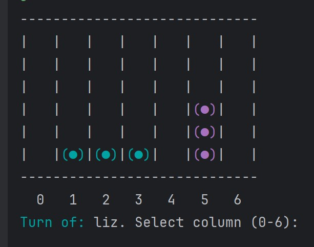
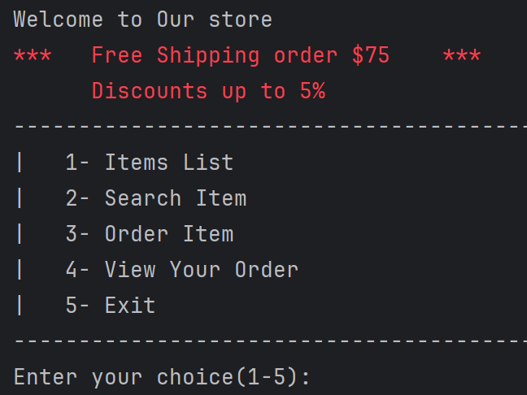

Projects 🚀

Connect4Game
Java
Classic two-player strategy game where players take turns dropping colored discs into a vertical grid, aiming to align four in a row horizontally, vertically, or diagonally to win.

Store Manager
Python
Store Management App is a Python application that allows users to manage inventory and place orders for items from the store.

Trips Platform
ASP.NET (MVC)
Website that simplifies travel planning by offering flight, hotel, and vacation package bookings, along with personalized recommendations and pricing.